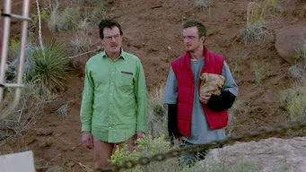
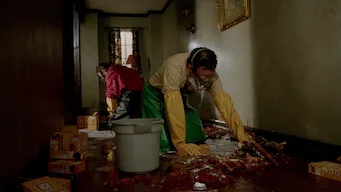
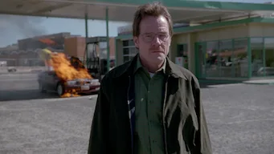
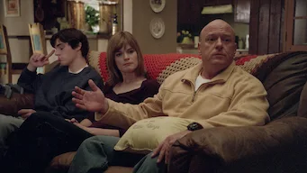
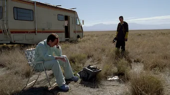
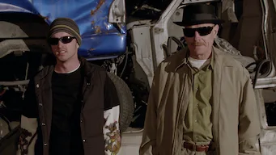

97% Match
2013
18+
5 Seasons
HD
A high school chemistry teacher dying of cancer teams with a former student to secure his family's future by manufacturing and selling crystal meth.
Cast:
Brayn Cranston, Aaron Paul, Anna Gunn, more
Genres:
Crime TV Shows, Tv Thrillers, TV Dramas
This show is:
Violent, Gritty, Dark
Episodes
1

Pilot
58 m
Diagnosed with terminal lung cancer, a high school chemistry teacher resorts to cooking and selling methamphetamine to provide for his family.
2
The Cat's in the Bag
48 m
Thier first aborted drug deal forces Walt and Jesse to disposr of a pair of corpses. Meanwhile, Skyler suspects that her husband is up to no good.
3
And the Bag's in the River
48 m
As Walt cleans up the mess that was left after his first drug deal, Skyler gets too close to the truth about his double life.
4
Cancer Man
48 m
Being forced to reveal the truth about his illness leaves Walt facing the dilemma of how to pay for an expensive series of cancer treatments.
5
Gray Matter
48 m
Skyler organizes an interventions to persuade Walt to accept his former research partner's generous offer to pay for the cancer treatments.
6
Crazy Handful of Nothin'
48 m
With the side effects and cost of his treament mounting, walt demands that Jesse find a wholesaler to buy thier drugs-- which lands him in trouble.
7
A No-Rough-Stuff-Type Deal
47 m
After Jesse's brush with death, Walt agrees to produce even more drugs for the ruthless Tucoo. Meanwhile, Skyler suspects her sister of shoplifting.
Breaking Bad Collection
5 Seasons
97% Match
18 +
2013
A high school chemistry teacher dying of cancer teams with a former student to secure his family's future by manufacturing and selling crystal meth.
5 Seasons
92% Match
18 +
2020
This Emmy-nominated prequel to "Breaking Bad" follows small-time attorney Jimmy McGill as he transforms into morally challenged lawyer Saul Goodman.
2 hr 2m
16 +
2019
Fugitive Jesse Pinkman attempts to outrun his past. ritten and directed by "Breaking Bad" creator Vince Gilligan, starring Aaron Paul.
13m
16 +
2019
Aaron Paul, Vince Grilligan and other cast members, producers and crew share stories and footage from the making of "El Camino."
More Like This
4 Seasons
93% Match
18 +
2022
A financial adviser drags his family from Chicago to the Missouri Ozkars, where he must launder $500 million in five years to appease a drug boss.
3 Seasons
92% Match
18 +
2017
The true story of Colombia's infamously violent and powerful drug cartels fuels this gritty gangster drama series.

2 Seasons
16 +
2019
In the late 1970s two FBI agents expand criminal science by delving into the psychology of murder and getting uneasily close to all-too-real monsters.

6 Seasons
98% Match
18 +
2022
A notorious gang in 1911 Birmingham, England, is led by the fierce Tommy Shelby, a crime boss set on moving up in the world no matter the cost.
Limited Series
18 +
2019
After a young woman is accused of lying about a rape, two female detectives investigate a spate of eerily similar attacks. Inspired by true events.
6 Episodes
79% Match
16 +
2018
After helping thqart a terrorist attack, a war veteran is assigned to protect a politician who was a main propponent of the very conflict he fought in.
3 Seasons
18 +
2019
A gifted detective takes a job in a small town so he can spend more time with his family. But he is soon drawn into web.
2 Seasons
94% Match
18 +
2022
Two seasoned drug dealers return to the gritty streets of London, but their pursuit money and powers are threatened
2 Series
66% Match
18 +
2011
In this gritty, stylish drama series, two london drugs dealers ply thier lucrative